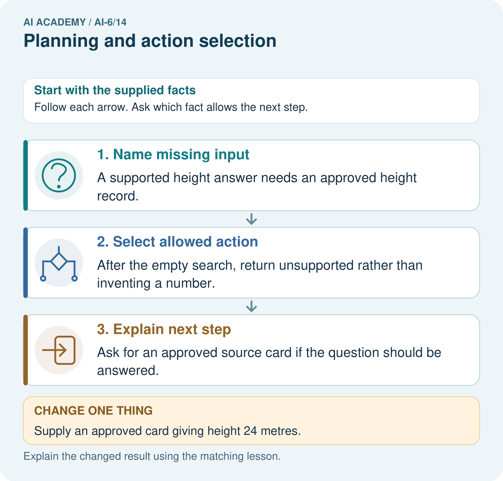
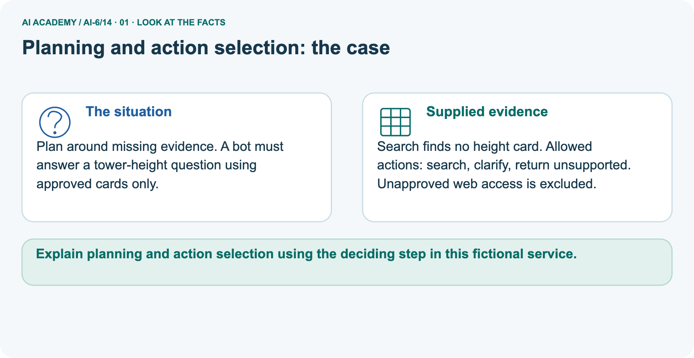
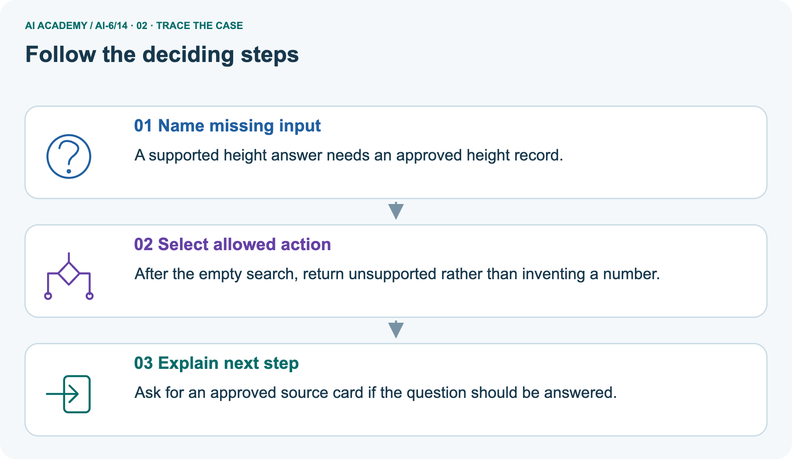
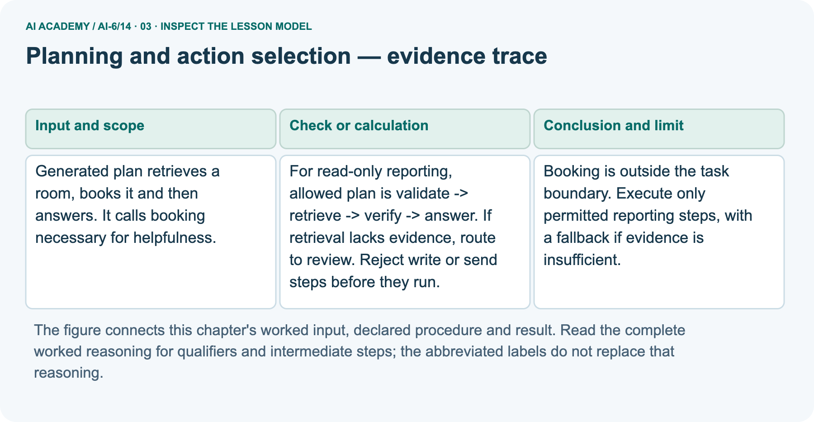
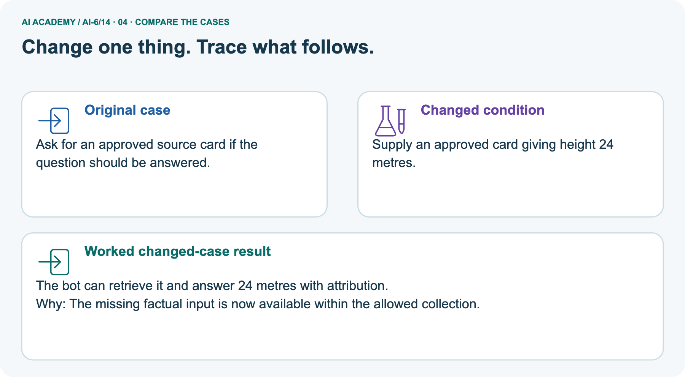
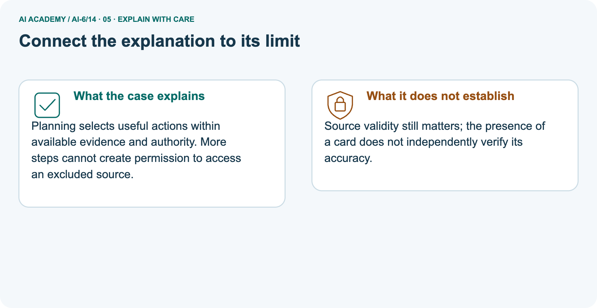
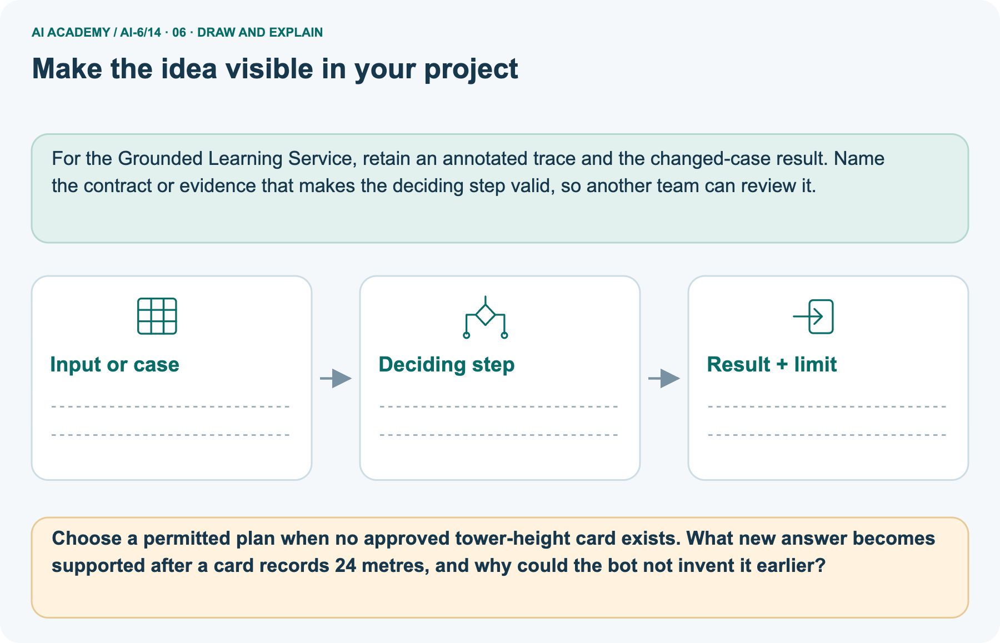

AI Academy · Level 6 · Grade 11 · Week 14 · Workbook
Planning and action selection
Learn to understand, design, build, test and explain AI systems responsibly.
Project: Grounded Learning Service
Workbook · 1 of 15
Recall and choose your starting point
Record your starting explanation for Planning and action selection before opening notes. Show any later correction separately.
Try the recall before opening notes. Then use a different colour or a labelled second line to correct your explanation.
State machines for bounded agents
Without opening the old lesson, explain one key idea from State machines for bounded agents. Give an example and a mistake that the idea helps you avoid.
Failure budgets and service objectives
Without opening the old lesson, explain one key idea from Failure budgets and service objectives. Give an example and a mistake that the idea helps you avoid.
Testing model-dependent behaviour
Without opening the old lesson, explain one key idea from Testing model-dependent behaviour. Give an example and a mistake that the idea helps you avoid.
Workbook · 2 of 15
Practise with fading help
Complete the supported Planning and action selection trace and record the first step you can explain without help.
Use W2: Trace the worked case for Planning and action selection. Record the answer once; the lesson and workbook refer to the same attempt.
| Given inputs | Procedure I chose | Middle steps | Result and check |
|---|---|---|---|
Workbook · 3 of 15
Individual reasoning check
Check the proposed Planning and action selection explanation against the supplied facts before discussing it.
Use the worked case for Planning and action selection. Proposed explanation: “The worked result establishes every future case”. Decide whether this explanation is supported.
Point to the step or supplied fact that decides; explain your repair if needed.
Workbook · 4 of 15
Independent transfer case
Write one first attempt at the reserved independent case before feedback. Repeated copies of that case refer to the same recorded attempt.
Independent case: Apply a new case independently
Plan validates input then sends a message before checking recipient approval. The task authorises drafting only. Locate violation.
Attempt this case before feedback. Record any help. Earlier examples below are further practice; a case already practised with feedback cannot establish fresh transfer.
Workbook · 5 of 15
W1 Explain the mechanism
Explain the mechanism. Apply the supplied Planning and action selection facts and keep your reasoning.
Explain the weekly mechanism in your own words. Use the worked scenario to name its input, decision rule and output.
Workbook · 6 of 15
W2 Trace the worked case
Trace the worked case. Apply the supplied Planning and action selection facts and keep your reasoning.
Generated plan retrieves a room, books it and then answers. It calls booking necessary for helpfulness. Show the intermediate steps and give the conclusion with its scope.
Workbook · 7 of 15
W3 Audit the limit
Audit the limit. Apply the supplied Planning and action selection facts and keep your reasoning.
A report omits this qualification: A plausible plan is not an approval or proof that its prerequisites hold. Explain how omitting it could change a reader's interpretation, and write an accurate replacement.
Workbook · 8 of 15
W4 Apply a new case independently
Attempt before feedback. If this repeats the selected independent case, reuse that first attempt; otherwise keep a separate record. Apply a new case independently. Apply the supplied Planning and action selection facts and keep your reasoning.
Plan validates input then sends a message before checking recipient approval. The task authorises drafting only. Locate violation.
Workbook · 9 of 15
W5 Design a revealing follow-up
Design a revealing follow-up. Apply the supplied Planning and action selection facts and keep your reasoning.
For the worked scenario, propose one additional case that could reveal a failure, describe its expected outcome before running it, and explain what would need to remain fixed for a fair comparison.
Do not reuse W4 as a new final test after receiving feedback.
Workbook · 10 of 15
Project checkpoint and reflection
Connect Planning and action selection to Grounded Learning Service, identify a limit and choose the next useful test.
Add a labelled planning and action selection evidence sheet to Grounded Learning Service. Show how you can explain the mechanism and terminology of planning and action selection.
Use the supplied fictional case and keep its inputs, intermediate steps, calculation or prediction, and limitation. Connect this record to last week’s record; a matching answer without a trace is insufficient.
Workbook · 11 of 15
Feedback, return check and learning record
Record the first repaired step and a different case to revisit after a delay.
| Evidence | My record |
|---|---|
| Worked alone / hint / model | |
| First step I repaired and why | |
| New case checked later; date and result | |
| What I can now explain without notes | |
| One remaining question |
Revisit this idea with your teacher after a delay. Familiarity is different from explaining and using it on a changed case.
Workbook · 12 of 15
Pictorial case practice: Planning and action selection
Plan around missing evidence. A bot must answer a tower-height question using approved cards only. Explain the labelled step before checking the changed condition.
Plan around missing evidence. A bot must answer a tower-height question using approved cards only.
Search finds no height card. Allowed actions: search, clarify, return unsupported. Unapproved web access is excluded.

Choose a permitted plan when no approved tower-height card exists. What new answer becomes supported after a card records 24 metres, and why could the bot not invent it earlier?
Record the help used
Support used: alone / hint / worked example. This record is practice evidence.
Project connection: For the Grounded Learning Service, retain an annotated trace and the changed-case result. Name the contract or evidence that makes the deciding step valid, so another team can review it.
Workbook · 13 of 15
Project portfolio milestone
Keep this week’s input, deciding step, result and limit together in the Grounded Learning Service record.
Project: Grounded Learning Service
Current milestone: Test changed cases. Keep normal, boundary and failure cases; compare expected and observed results.
For the Grounded Learning Service, retain an annotated trace and the changed-case result. Name the contract or evidence that makes the deciding step valid, so another team can review it.
| Evidence to keep | My record |
|---|---|
| This week’s input and deciding step | |
| Prediction and actual result (or labelled paper trace) | |
| One change since the previous checkpoint and why | |
| One error or limit and the next test |
Workbook · 14 of 15
Supported practice and learning evidence
Try the supported questions before comparing with hints and feedback. Record what you repaired and the evidence you retained.
Use this supported practice once, in the browser or on paper. Keep the reserved independent assessment for a separate first attempt before teacher feedback.
Plan around missing evidence. A bot must answer a tower-height question using approved cards only.
Practice 1: explain the deciding evidence
Which labelled step matches this detail? Ask for an approved source card if the question should be answered.
1. Select allowed action
2. Explain next step
3. Name missing input
Hint · try first
Hint if needed: Read the steps in the pictorial case. Match the supplied detail to the stage that performs or records it.
Feedback · compare after trying
After your attempt, compare with the supported explanation: Explain next step Ask for an approved source card if the question should be answered. Planning selects useful actions within available evidence and authority.
More steps cannot create permission to access an excluded source.
Practice 2: explain the deciding evidence
Changed case · predict first
Changed-case practice: Supply an approved card giving height 24 metres. Which conclusion is supported by the supplied facts?
1. We can decide the result without examining the changed input or the procedure.
2. This one example guarantees correct results for every future input.
3. The bot can retrieve it and answer 24 metres with attribution.
Hint · try first
Hint if needed: Use the changed condition and the deciding step in the pictorial trace. The answer must say what follows from those facts.
Feedback · compare after trying
After your attempt, compare with the supported explanation: The bot can retrieve it and answer 24 metres with attribution. The missing factual input is now available within the allowed collection.
Repair a missing building block
Review State machines for bounded agents (ai-6/13). Goal: Explain the mechanism and terminology of state machines for bounded agents. Short practice: Trace A and B through the state diagram.
Name B’s forbidden transition and explain whether adding checking→querying permits that shortcut.. Return to this week and explain what you changed.
Review Failure budgets and service objectives (ai-6/11). Goal: Explain the mechanism and terminology of failure budgets and service objectives. Short practice: Calculate the maximum allowed failures among 100 requests.
Does 97 successes and 3 failures meet the target, and what changes after one failure becomes a success?. Return to this week and explain what you changed.
Review Testing model-dependent behaviour (ai-6/8). Goal: Explain the mechanism and terminology of testing model-dependent behaviour.
Short practice: Score "Friday in room B" and "Friday in room D" against both mandatory criteria. Would a correct 25-word response pass, and why?. Return to this week and explain what you changed.
Keep your completed work
Use Download completed work in the hosted lesson to export your answers, reflections, practice feedback and code-run evidence. Open the HTML copy to read or print it.
Drafts stay in this browser when storage is available; clear drafts on a shared device.
Workbook · 15 of 15
Visual concept journey
Explain each Planning and action selection picture from its labels, then record a relevant limit.
01. Planning and action selection: the case

Plan around missing evidence. A bot must answer a tower-height question using approved cards only. Supplied facts: Search finds no height card. Allowed actions: search, clarify, return unsupported.
Unapproved web access is excluded.
Point to the given fact that matters most. Explain why it matters.
02. Follow the deciding steps

Name missing input: A supported height answer needs an approved height record. → Select allowed action: After the empty search, return unsupported rather than inventing a number. → Explain next step: Ask for an approved source card if the question should be answered.
Point to each numbered stage and explain which recorded input it uses.
03. Planning and action selection — evidence trace

Planning and action selection — evidence trace. Generated plan retrieves a room, books it and then answers.
It calls booking necessary for helpfulness. | For read-only reporting, allowed plan is validate -> retrieve -> verify -> answer. If retrieval lacks evidence, route to review.
Reject write or send steps before they run. | Booking is outside the task boundary. Execute only permitted reporting steps, with a fallback if evidence is insufficient.
Read the labels and values. Explain the relationship the model shows.
04. Change one thing. Trace what follows.

Original case: Ask for an approved source card if the question should be answered. Changed condition: Supply an approved card giving height 24 metres.
Expected result: The bot can retrieve it and answer 24 metres with attribution. Reason: The missing factual input is now available within the allowed collection.
Predict before checking the worked changed-case result. Name what changed and what the supplied facts allow you to conclude.
05. Connect the explanation to its limit

Planning selects useful actions within available evidence and authority. More steps cannot create permission to access an excluded source.
Limit: Source validity still matters; the presence of a card does not independently verify its accuracy.
Explain the case, then point to a limit on the claim.
06. Make the idea visible in your project

For the Grounded Learning Service, retain an annotated trace and the changed-case result. Name the contract or evidence that makes the deciding step valid, so another team can review it.
Draw your input, deciding step, result and limit. Supported question: Choose a permitted plan when no approved tower-height card exists.
What new answer becomes supported after a card records 24 metres, and why could the bot not invent it earlier?
Draw your project trace and justify the deciding step using evidence.